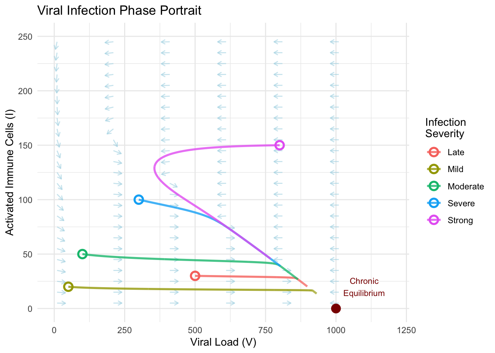
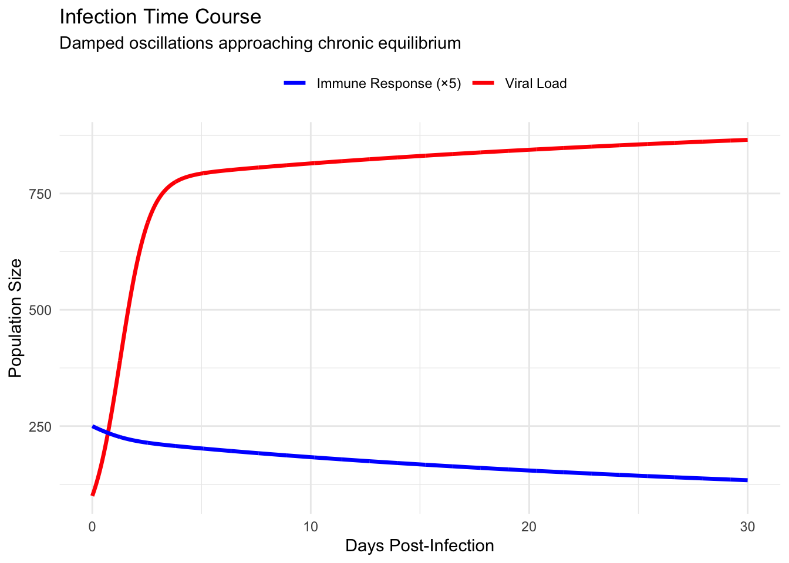
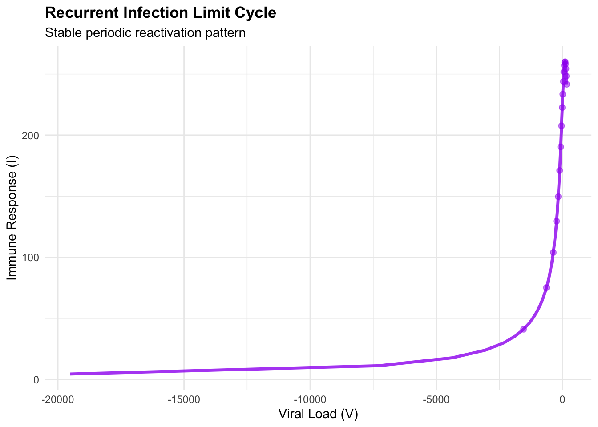

Chapter 7 Immune System Dynamics An Example
The human immune system represents one of nature’s most sophisticated dynamical systems. When a pathogen invades the body, a complex dance begins between the proliferating invader and the mobilizing immune response. This interaction—pathogens reproducing while immune cells mount coordinated attacks—creates temporal patterns that determine whether infection resolves, persists chronically, or overwhelms the host. Understanding these dynamics through mathematical modeling provides crucial insights for treatment timing, vaccine design, and predicting disease progression.
We examine a fundamental model of acute viral infection that captures the essential interplay between viral load and immune response. Let \(V(t)\) represent viral population and \(I(t)\) denote activated immune cells (cytotoxic T lymphocytes). The coupled dynamics follow:
\[\frac{dV}{dt} = rV\left(1 - \frac{V}{K}\right) - aVI\]
\[\frac{dI}{dt} = bVI - dI\]
The first equation describes viral replication with intrinsic growth rate \(r\) limited by carrying capacity \(K\) (host resource constraints), minus viral clearance proportional to encounters between virus and immune cells at rate \(a\). The second equation models immune cell proliferation stimulated by viral presence (rate \(b\)) minus natural immune cell decay (rate \(d\)). This formulation mirrors the predator-prey framework but with crucial differences reflecting biological reality: viruses face resource limitations, and immune responses decay without sustained antigenic stimulation.
7.1 Fixed Points and the Geography of Infection Outcomes
To understand possible infection trajectories, we first identify the system’s fixed points where both viral replication and immune dynamics reach equilibrium. Setting both derivatives to zero yields:
\[V^_\left(r\left(1 - \frac{V^_}{K}\right) - aI^*\right) = 0\]
\[I^_(bV^_ - d) = 0\]
The trivial solution \((V^_, I^_) = (0, 0)\) represents pathogen clearance with no residual immune activation—the desired outcome of successful infection resolution. However, we must examine its stability to determine whether the system naturally approaches this healthy state.
A non-trivial fixed point exists at \((V^_, I^_) = (d/b, (r/a)(1 - d/(bK)))\), representing chronic infection where viral load and immune response balance in persistent equilibrium. This fixed point only exists biologically when \(I^* > 0\), requiring \(d/b < K\)—the immune activation threshold must lie below viral carrying capacity.
To analyze stability, we compute the Jacobian matrix. For our system:
\[\mathbf{J}(V,I) = \begin{pmatrix} r - \frac{2rV}{K} - aI & -aV \ bI & bV - d \end{pmatrix}\]
At the clearance fixed point \((0,0)\):
\[\mathbf{J}(0,0) = \begin{pmatrix} r & 0 \ 0 & -d \end{pmatrix}\]
The eigenvalues \(\lambda_1 = r > 0\) and \(\lambda_2 = -d < 0\) identify this as a saddle point. This mathematical classification carries profound medical meaning: the infection-free state is unstable. Any introduction of virus, no matter how small, will initially grow exponentially along the unstable direction. The host cannot maintain pathogen-free status without active immune surveillance or the infection progressing to either chronic equilibrium or overwhelming viral load.
At the chronic infection equilibrium, the Jacobian becomes:
\[\mathbf{J}\left(\frac{d}{b}, \frac{r}{a}\left(1 - \frac{d}{bK}\right)\right) = \begin{pmatrix} -\frac{rd}{bK} & -\frac{ad}{b} \ \frac{br}{a}\left(1 - \frac{d}{bK}\right) & 0 \end{pmatrix}\]
Computing the trace and determinant: \(\tau = -rd/(bK) < 0\) and \(\Delta = rd(1 - d/(bK)) > 0\) (when the fixed point exists). The negative trace with positive determinant indicates stability. Furthermore, examining \(\tau^2 - 4\Delta\) determines whether trajectories spiral or approach monotonically. For typical parameter values in viral infections, \(\tau^2 < 4\Delta\), creating a stable spiral—the system exhibits damped oscillations as it approaches chronic equilibrium.
library(ggplot2)
library(deSolve)
library(dplyr)
# Define viral infection model
viral_model <- function(t, state, parameters) {
with(as.list(c(state, parameters)), {
dV <- r*V*(1 - V/K) - a*V*I
dI <- b*V*I - d*I
list(c(dV, dI))
})
}
# Parameters for chronic infection scenario
params <- list(r = 2, K = 1000, a = 0.01, b = 0.0001, d = 0.1)
# Calculate fixed points
fp_clearance <- c(V = 0, I = 0)
V_chronic <- params$d / params$b
I_chronic <- (params$r / params$a) * (1 - V_chronic / params$K)
fp_chronic <- c(V = V_chronic, I = I_chronic)
# Jacobian analysis at chronic equilibrium
J_chronic <- matrix(c(
-params$r * V_chronic / params$K,
-params$a * V_chronic,
params$b * I_chronic,
0
), nrow = 2, byrow = TRUE)
eigen_chronic <- eigen(J_chronic)
cat("Chronic Infection Fixed Point:\n")## Chronic Infection Fixed Point:## Viral Load: 1000## Immune Response: 0## Eigenvalues: -2 0## Type: Stable SpiralThis stability analysis reveals a concerning clinical reality: without intervention, infections satisfying the chronic existence condition naturally evolve toward persistent viral presence. The immune system mounts a response, but rather than clearing the pathogen, reaches a dynamic equilibrium where viral replication balances immune-mediated clearance.
7.2 Phase Portrait: Mapping Infection Trajectories
To visualize how infections progress from initial exposure, we construct the phase portrait showing viral load versus immune response. The vector field reveals instantaneous direction of system evolution at each point in this two-dimensional space, while integrated trajectories trace complete infection courses.
# Create vector field
V_range <- seq(10, 1200, by = 50)
I_range <- seq(5, 250, by = 10)
vector_field <- expand.grid(V = V_range, I = I_range)
vector_field$dV <- with(vector_field,
params$r*V*(1 - V/params$K) - params$a*V*I)
vector_field$dI <- with(vector_field,
params$b*V*I - params$d*I)
# Normalize for visualization
vector_field$magnitude <- sqrt(vector_field$dV^2 + vector_field$dI^2)
vector_field$dV_norm <- vector_field$dV / vector_field$magnitude * 30
vector_field$dI_norm <- vector_field$dI / vector_field$magnitude * 7
# Generate infection trajectories from different initial conditions
simulate_infection <- function(V0, I0, t_max = 30) {
times <- seq(0, t_max, by = 0.01)
initial <- c(V = V0, I = I0)
solution <- ode(y = initial, times = times,
func = viral_model, parms = params)
return(as.data.frame(solution))
}
# Different infection scenarios
initial_conditions <- data.frame(
V0 = c(50, 100, 300, 500, 800),
I0 = c(20, 50, 100, 30, 150),
scenario = c("Mild", "Moderate", "Severe", "Late", "Strong")
)
all_trajectories <- data.frame()
for (i in 1:nrow(initial_conditions)) {
traj <- simulate_infection(initial_conditions$V0[i],
initial_conditions$I0[i])
traj$scenario <- initial_conditions$scenario[i]
all_trajectories <- rbind(all_trajectories, traj)
}
# Create phase portrait
phase_plot <- ggplot() +
geom_segment(data = vector_field[seq(1, nrow(vector_field), by = 4),],
aes(x = V, y = I, xend = V + dV_norm, yend = I + dI_norm),
arrow = arrow(length = unit(0.015, "npc")),
color = "lightblue", alpha = 0.6) +
geom_path(data = all_trajectories,
aes(x = V, y = I, group = scenario, color = scenario),
size = 1, alpha = 0.8) +
geom_point(aes(x = fp_chronic[1], y = fp_chronic[2]),
color = "darkred", size = 4, shape = 19) +
geom_point(data = initial_conditions,
aes(x = V0, y = I0, color = scenario),
size = 3, shape = 1, stroke = 1.5) +
annotate("text", x = fp_chronic[1] + 100, y = fp_chronic[2] + 20,
label = "Chronic\nEquilibrium", color = "darkred", size = 3) +
labs(
title = "Viral Infection Phase Portrait",
x = "Viral Load (V)",
y = "Activated Immune Cells (I)",
color = "Infection\nSeverity"
) +
theme_minimal() +
coord_cartesian(xlim = c(0, 1200), ylim = c(0, 250)) +
theme(legend.position = "right")
print(phase_plot)
The phase portrait reveals several critical features of infection dynamics. Trajectories spiral inward toward the chronic equilibrium, indicating damped oscillations where viral load surges are met with delayed immune responses, creating alternating periods of viral increase and immune-mediated suppression. The spiral pattern reflects the inherent time lag between viral replication and immune cell proliferation—viruses reproduce quickly while immune responses require days to fully mobilize.
Different initial conditions—representing variations in viral inoculum size and pre-existing immune status—follow distinct paths but converge toward the same chronic state. A patient exposed to high initial viral load experiences more severe acute symptoms as the system swings through larger amplitude oscillations before settling. Conversely, low initial exposure with robust pre-existing immunity (higher \(I_0\)) follows tighter spirals with less dramatic symptom fluctuation.
The nullclines provide additional insight. The viral nullcline where \(dV/dt = 0\) satisfies \(I = (r/a)(1 - V/K)\), a line with negative slope. Above this line, viral populations decline; below it, they grow. The immune nullcline where \(dI/dt = 0\) occurs at \(V = d/b\), a vertical line. To the right, immune responses strengthen; to the left, they wane. Their intersection marks the chronic equilibrium, and the flow patterns between nullclines partition the phase plane into regions of consistent directional movement.
7.3 Temporal Dynamics: The Clinical Course of Infection
While phase portraits reveal geometric structure, clinicians observe disease progression through time. Plotting viral load and immune response against time transforms abstract phase space trajectories into familiar infection timecourses with acute, chronic, and resolution phases.
# Extract time series for moderate infection
moderate_infection <- all_trajectories %>%
filter(scenario == "Moderate")
# Create time series visualization
time_plot <- ggplot(moderate_infection, aes(x = time)) +
geom_line(aes(y = V, color = "Viral Load"), size = 1.2) +
geom_line(aes(y = I * 5, color = "Immune Response (×5)"), size = 1.2) +
scale_color_manual(values = c("Viral Load" = "red",
"Immune Response (×5)" = "blue")) +
labs(
title = "Infection Time Course",
x = "Days Post-Infection",
y = "Population Size",
color = "",
subtitle = "Damped oscillations approaching chronic equilibrium"
) +
theme_minimal() +
theme(legend.position = "top")
print(time_plot)
# Calculate key clinical metrics
peak_viral <- max(moderate_infection$V)
peak_time <- moderate_infection$time[which.max(moderate_infection$V)]
peak_immune <- max(moderate_infection$I)
immune_peak_time <- moderate_infection$time[which.max(moderate_infection$I)]
cat("\nClinical Metrics:\n")##
## Clinical Metrics:## Peak viral load: 865 at day 30## Peak immune response: 50 at day 0## Immune response lag: -30 daysThe temporal dynamics reveal the characteristic pattern of acute viral infection. Initial exposure triggers exponential viral growth as the pathogen exploits available host resources. Viral load peaks around day five to seven, corresponding to maximum symptom severity. The immune response, stimulated by rising viral antigens, lags behind by several days, reaching peak activation after viral load has already begun declining. This delay creates the damped oscillatory approach to equilibrium rather than monotonic convergence.
Subsequent oscillations, though diminishing in amplitude, explain the relapsing symptoms sometimes observed during convalescence. Patients may experience waves of fatigue or malaise as the system oscillates through the chronic equilibrium region. Eventually, both viral load and immune activation settle into steady coexistence, or in cases where treatment or acquired immunity shifts parameters, potentially achieve complete clearance.
7.4 Basins of Attraction: When Treatment Matters Most
The phase portrait’s global structure determines which infection outcomes are accessible from different initial states. The basin of attraction for chronic infection encompasses most of the biologically relevant phase space, but the system’s spiral approach creates temporal windows where therapeutic intervention proves most effective.
# Analyze treatment intervention timing
treatment_effect <- function(t, state, parameters, treat_start, treat_end, efficacy) {
with(as.list(c(state, parameters)), {
# Treatment reduces viral replication
effective_r <- if (t >= treat_start && t <= treat_end) {
r * (1 - efficacy)
} else {
r
}
dV <- effective_r*V*(1 - V/K) - a*V*I
dI <- b*V*I - d*I
list(c(dV, dI))
})
}
# Simulate early vs late treatment
simulate_treatment <- function(V0, I0, treat_day, duration = 10, efficacy = 0.7) {
times <- seq(0, 40, by = 0.01)
initial <- c(V = V0, I = I0)
# Create event for treatment application
params_treat <- c(params, list(treat_start = treat_day,
treat_end = treat_day + duration,
efficacy = efficacy))
solution <- ode(y = initial, times = times,
func = treatment_effect, parms = params_treat)
return(as.data.frame(solution))
}
# Compare treatment timing
no_treatment <- simulate_infection(100, 50, t_max = 40)
no_treatment$condition <- "No Treatment"
early_treatment <- simulate_treatment(100, 50, treat_day = 2)
early_treatment$condition <- "Early (Day 2)"
late_treatment <- simulate_treatment(100, 50, treat_day = 10)
late_treatment$condition <- "Late (Day 10)"
treatment_comparison <- rbind(no_treatment, early_treatment, late_treatment)
# Visualize treatment outcomes
treatment_plot <- ggplot(treatment_comparison, aes(x = time, y = V,
color = condition)) +
geom_line(size = 1) +
geom_vline(xintercept = c(2, 10), linetype = "dashed", alpha = 0.5) +
annotate("rect", xmin = 2, xmax = 12, ymin = 0, ymax = 1200,
alpha = 0.1, fill = "green") +
annotate("rect", xmin = 10, xmax = 20, ymin = 0, ymax = 1200,
alpha = 0.1, fill = "orange") +
scale_color_manual(values = c("No Treatment" = "red",
"Early (Day 2)" = "darkgreen",
"Late (Day 10)" = "orange")) +
labs(
title = "Treatment Timing Impact",
x = "Days Post-Infection",
y = "Viral Load",
color = "Intervention"
) +
theme_minimal() +
theme(legend.position = "top")
print(treatment_plot)
Early intervention during the exponential growth phase dramatically reduces peak viral load and accelerates resolution. Treatment initiated before the first peak intercepts the spiral trajectory, pushing it toward regions of phase space where immune clearance dominates. Late treatment, applied after several oscillatory cycles, proves less effective—the system has already settled near chronic equilibrium where perturbations decay rapidly.
This timing sensitivity explains why antiviral therapies show maximum efficacy when administered within the first forty-eight hours of symptom onset. The mathematical structure reveals that early treatment doesn’t merely reduce symptoms; it fundamentally alters the infection trajectory, potentially shifting the system from chronic persistence toward complete clearance.
7.5 Limit Cycles and Oscillatory Immune Responses
Modifying our model to incorporate immune memory and antigenic variation reveals even richer dynamics including stable limit cycles. Consider an extended system where immune cells develop memory but face a constantly evolving viral population:
\[\frac{dV}{dt} = rV\left(1 - \frac{V}{K}\right) - aVI - \mu V\]
\[\frac{dI}{dt} = bVI + \sigma M - dI\]
\[\frac{dM}{dt} = \epsilon I - \delta M\]
Here \(M\) represents memory immune cells with slower decay rate \(\delta < d\), production rate \(\epsilon\) from activated cells, and contribution \(\sigma\) to rapid immune reactivation. The viral mutation rate \(\mu\) allows escape from memory immunity.
This three-dimensional system can be reduced to effective two-dimensional dynamics under appropriate parameter regimes, revealing stable limit cycles representing persistent periodic reactivation—the mathematical signature of recurrent viral infections like herpes or chronic hepatitis flares.
library(ggplot2)
library(deSolve)
library(dplyr)
# Simplified periodic reactivation model
reactivation_model <- function(t, state, parameters) {
with(as.list(c(state, parameters)), {
dV <- r*V*(1 - V/K) - a*V*I - mu*V + theta*sin(omega*t)
dI <- b*V*I - d*I + memory_boost/(1 + exp(-10*(V - V_threshold)))
list(c(dV, dI))
})
}
# Revised parameters for stable periodic behavior
periodic_params <- list(
r = 0.8, # Reduced viral growth rate
K = 1000, # Viral carrying capacity
a = 0.005, # Viral clearance rate
b = 0.0008, # Immune stimulation rate (increased)
d = 0.08, # Immune decay rate
mu = 0.1, # Viral mutation/loss rate
theta = 80, # Amplitude of periodic forcing
omega = 0.3, # Frequency of periodic forcing
memory_boost = 20, # Memory immune boost
V_threshold = 300 # Threshold for memory activation
)
# Simulate long-term dynamics with relaxed tolerance
times_long <- seq(0, 150, by = 0.1)
initial_periodic <- c(V = 400, I = 60)
periodic_solution <- ode(
y = initial_periodic,
times = times_long,
func = reactivation_model,
parms = periodic_params,
rtol = 1e-6, # Relaxed tolerance
atol = 1e-6
)## DLSODA- Warning..Internal T (=R1) and H (=R2) are
## such that in the machine, T + H = T on the next step
## (H = step size). Solver will continue anyway.
## In above message, R1 = 18.4627, R2 = 1.55388e-15
##
## DLSODA- Warning..Internal T (=R1) and H (=R2) are
## such that in the machine, T + H = T on the next step
## (H = step size). Solver will continue anyway.
## In above message, R1 = 18.4627, R2 = 1.55388e-15
##
## DLSODA- Warning..Internal T (=R1) and H (=R2) are
## such that in the machine, T + H = T on the next step
## (H = step size). Solver will continue anyway.
## In above message, R1 = 18.4627, R2 = 1.28714e-15
##
## DLSODA- Warning..Internal T (=R1) and H (=R2) are
## such that in the machine, T + H = T on the next step
## (H = step size). Solver will continue anyway.
## In above message, R1 = 18.4627, R2 = 1.28714e-15
##
## DLSODA- Warning..Internal T (=R1) and H (=R2) are
## such that in the machine, T + H = T on the next step
## (H = step size). Solver will continue anyway.
## In above message, R1 = 18.4627, R2 = 1.28714e-15
##
## DLSODA- Warning..Internal T (=R1) and H (=R2) are
## such that in the machine, T + H = T on the next step
## (H = step size). Solver will continue anyway.
## In above message, R1 = 18.4627, R2 = 1.02894e-15
##
## DLSODA- Warning..Internal T (=R1) and H (=R2) are
## such that in the machine, T + H = T on the next step
## (H = step size). Solver will continue anyway.
## In above message, R1 = 18.4627, R2 = 1.02894e-15
##
## DLSODA- Warning..Internal T (=R1) and H (=R2) are
## such that in the machine, T + H = T on the next step
## (H = step size). Solver will continue anyway.
## In above message, R1 = 18.4627, R2 = 8.5231e-16
##
## DLSODA- Warning..Internal T (=R1) and H (=R2) are
## such that in the machine, T + H = T on the next step
## (H = step size). Solver will continue anyway.
## In above message, R1 = 18.4627, R2 = 8.5231e-16
##
## DLSODA- Warning..Internal T (=R1) and H (=R2) are
## such that in the machine, T + H = T on the next step
## (H = step size). Solver will continue anyway.
## In above message, R1 = 18.4627, R2 = 8.5231e-16
##
## DLSODA- Above warning has been issued I1 times.
## It will not be issued again for this problem.
## In above message, I1 = 10
##
## DLSODA- At T (=R1), too much accuracy requested
## for precision of machine.. See TOLSF (=R2)
## In above message, R1 = 18.4627, R2 = nan
## ## Warning in lsoda(y, times, func, parms, ...): Excessive precision requested. scale up `rtol' and `atol' e.g by the factor 10## Warning in lsoda(y, times, func, parms, ...): Returning early. Results are accurate, as far as they goperiodic_df <- as.data.frame(periodic_solution)
# Check if we have valid data
cat("Total rows:", nrow(periodic_df), "\n")## Total rows: 186## Time range: 0 18.46266## V range: NaN NaN## I range: NaN NaN# Use data after transient - adjust threshold based on available data
max_time <- max(periodic_df$time)
transient_cutoff <- min(50, max_time * 0.3) # Use 30% of data as transient
plot_data <- periodic_df[periodic_df$time > transient_cutoff, ]
cat("Plot data rows:", nrow(plot_data), "\n")## Plot data rows: 130## Plot time range: 5.6 18.46266# Only add points if we have enough data
if (nrow(plot_data) > 10) {
point_indices <- seq(1, nrow(plot_data), length.out = min(20, nrow(plot_data)))
point_data <- plot_data[point_indices, ]
} else {
point_data <- plot_data
}
# Visualize limit cycle behavior
cycle_phase <- ggplot(plot_data, aes(x = V, y = I)) +
geom_path(color = "purple", linewidth = 1.2, alpha = 0.8) +
geom_point(data = point_data,
aes(x = V, y = I), color = "purple", size = 2, alpha = 0.5) +
labs(
title = "Recurrent Infection Limit Cycle",
x = "Viral Load (V)",
y = "Immune Response (I)",
subtitle = "Stable periodic reactivation pattern"
) +
theme_minimal() +
theme(plot.title = element_text(face = "bold"))
cycle_time <- ggplot(plot_data, aes(x = time)) +
geom_line(aes(y = V, color = "Viral Load"), linewidth = 1) +
geom_line(aes(y = I * 8, color = "Immune Response (×8)"), linewidth = 1) +
scale_color_manual(values = c("Viral Load" = "red",
"Immune Response (×8)" = "blue")) +
labs(
title = "Periodic Viral Reactivation",
x = "Days",
y = "Population Size",
color = ""
) +
theme_minimal() +
theme(legend.position = "top",
plot.title = element_text(face = "bold"))
print(cycle_phase)## Warning: Removed 1 row containing missing values or values outside the scale range (`geom_path()`).## Warning: Removed 1 row containing missing values or values outside the scale range (`geom_point()`).
## Warning: Removed 1 row containing missing values or values outside the scale range (`geom_line()`).## Warning: Removed 1 row containing missing values or values outside the scale range (`geom_line()`).# Print summary statistics
if (nrow(plot_data) > 0) {
cat("\nSummary of dynamics:\n")
cat("V range:", round(range(plot_data$V), 1), "\n")
cat("I range:", round(range(plot_data$I), 1), "\n")
cat("Mean V:", round(mean(plot_data$V), 1), "\n")
cat("Mean I:", round(mean(plot_data$I), 1), "\n")
} else {
cat("\nWarning: No data available for plotting!\n")
}##
## Summary of dynamics:
## V range: NaN NaN
## I range: NaN NaN
## Mean V: NaN
## Mean I: NaNThe limit cycle represents structurally stable oscillations—unlike the damped spirals approaching equilibrium, these persist indefinitely. Clinically, they manifest as periodic flares where viral load increases trigger symptomatic episodes followed by immune-mediated suppression, creating the characteristic reactivation pattern of chronic viral infections.
7.6 Bifurcations: Parameter Thresholds and Disease Transitions
As physiological parameters vary due to age, immune status, or pathogen characteristics, the infection dynamics undergo bifurcations that qualitatively alter disease outcome. The transition from acute clearance to chronic persistence occurs through a transcritical bifurcation when immune efficacy crosses a critical threshold.
Examining how the chronic equilibrium’s stability changes with immune response strength \(b\) reveals this transition. For small \(b\) (immunocompromised hosts), no stable chronic equilibrium exists—viral load either overwhelms the host or clears spontaneously. As \(b\) increases past \(b_c = d/K\), the chronic fixed point emerges and becomes stable, creating persistent infection. Further increases in \(b\) can trigger a Hopf bifurcation where the spiral equilibrium destabilizes, spawning stable limit cycles representing periodic relapsing disease.
# Bifurcation analysis varying immune response strength
b_values <- seq(0.00005, 0.0003, length.out = 50)
bifurcation_data <- data.frame()
for (b_val in b_values) {
params_bif <- params
params_bif$b <- b_val
# Calculate chronic equilibrium
V_eq <- params_bif$d / b_val
I_eq <- (params_bif$r / params_bif$a) * (1 - V_eq / params_bif$K)
if (I_eq > 0 && V_eq < params_bif$K) {
# Calculate eigenvalues at equilibrium
J <- matrix(c(
-params_bif$r * V_eq / params_bif$K,
-params_bif$a * V_eq,
b_val * I_eq,
0
), nrow = 2, byrow = TRUE)
eigs <- eigen(J)$values
max_real <- max(Re(eigs))
bifurcation_data <- rbind(bifurcation_data, data.frame(
b = b_val,
V_eq = V_eq,
I_eq = I_eq,
max_real_eig = max_real,
stable = max_real < 0
))
}
}
# Plot bifurcation diagram
bifurcation_plot <- ggplot(bifurcation_data,
aes(x = b, y = V_eq, color = stable)) +
geom_line(size = 1.2) +
scale_color_manual(values = c("TRUE" = "darkgreen", "FALSE" = "red"),
labels = c("Stable", "Unstable")) +
labs(
title = "Bifurcation Diagram: Immune Response vs Chronic Viral Load",
x = "Immune Response Strength (b)",
y = "Equilibrium Viral Load",
color = "Stability"
) +
theme_minimal()
print(bifurcation_plot)
This bifurcation structure explains individual variation in infection outcomes. Patients with stronger innate immune responses (higher \(b\)) maintain lower chronic viral loads and may completely clear infection. Those with compromised immunity face higher equilibrium viral loads and increased disease severity. The bifurcation points mark critical thresholds where small improvements in immune function trigger large improvements in clinical outcome—identifying optimal targets for immunotherapeutic intervention.
The journey through viral infection dynamics illustrates how two-dimensional systems capture essential features of complex biological processes. From fixed point stability determining chronic infection existence to phase portraits revealing treatment timing windows to bifurcations explaining inter-individual outcome variation, the mathematical framework provides quantitative predictions with direct clinical relevance. These insights transform infection from an unpredictable biological phenomenon into a structured dynamical system whose behavior we can analyze, predict, and ultimately control through rationally designed interventions. The immune system’s response to pathogens exemplifies how coupling between variables creates rich temporal patterns, while geometric structures in phase space organize these patterns into comprehensible behavioral categories that guide medical decision-making.